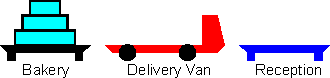
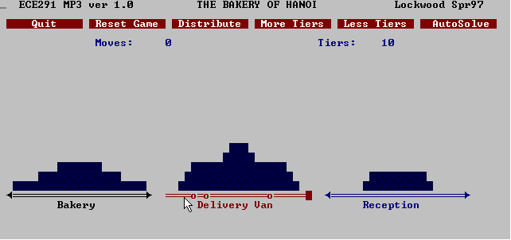

| ECE291 |
Computer Engineering II |
Lockwood, Spring 1997 |
Machine Problem 3: The Bakery of Hanoi
| Assigned | Tuesday 2/25/97 |
| Due Date | Tuesday 3/11/97 |
| Purpose: |
Understand recursion, text-mode video, and mouse control.
|
| Points | 50 |
Introduction
A wedding is planned in the town of Hanoi, Illinois.
For the event, a baker has prepared an elaborate
wedding cake with multiple tiers. Each tier of the cake is a
different size. Initially, the cake is stacked at the bakery
with the largest tier at the bottom and progressively smaller
cakes stacked above one another. Using manual labor and the bakery's
single delivery truck, a plan is needed to transport the
entire cake to the recepton. A diagram is shown below:

The baker must transport the entire cake to the reception.
Because the cake is heavy, it must be moved one tier at a time.
To insure that the cakes are not damaged before the reception, the
cake tiers must always be kept at the bakery, in the delivery van,
or on the table at the reception. Tiers of cake can be
moved directly between all three locations.
Tiers of the cake may be stacked,
but a larger tier must never be placed atop a smaller one for fear
of collapsing the smaller tier.
The baker's delivery man, Igor, has already moved some of the
tiers of cake. Wrought with confusion and frustration from moving
the cake, Igor has called the baker and quit his job. With the
wedding reception only hours away, the baker is desparate to find
someone to get all of the cakes to the reception and stacked in the
proper order.
As a student of ECE291, the baker has hired you to help him
devise a plan to start where Igor left the tiers and assemble the cake
at the reception as efficiently as possible.
Implementation
For this machine problem, you will write a program which:
- Graphically displays cake tiers at the bakery,
on the van, and at the reception using text-mode video.
- Simulates Igor's activity by randomly distributing
tiers of cake to each location.
- Allows a user to manually move tiers of cake
between locations via the mouse.
- Automatically transfer
all tiers of the cake to the reception using the
least number of transfers
starting with any number of tiers
in any given arrangement.

A screen dump of the running program is shown above. Along the top
of the screen are a series of buttons. Each of these buttons responds to
a mouse-click. Just below the buttons, the program displays the current
number of moves as well as the number of tiers of cake. The lower portion
of the screen contains the bakery, the delivery truck, and reception.
To win the game, the entire cake should be moved to the reception
(the right-most location).
Usage Instructions
The library-based MP3.EXE demo can be run from the DOS prompt.
Use the mouse to press the on-screen buttons and
move tiers of cake between locations. Tiers are moved by moving the
mouse to the source, pressing the mouse button, moving the mouse
to the destination, then releasing the mouse button. The program
will not allow larger tiers of cake to be placed atop smaller tiers.
If the mouse does not appear on your screen, enter
mouse to load your mouse driver.
This program should operate both in full-screen text-mode and within a
window.
Data Structures
The following variables are used throughout the program and by
the library functions.
- Tiers:
This word-sized variable stores the number of tiers in the current game.
A Larger number of tiers makes the game more difficult.
By default, the game begins with 4 tiers. The value can
be changed from 1 to 10 by clicking on the More Tiers or
Less Tiers buttons.
- Moves:
A word-sized variable that tracks the number of valid moves. It
is reset to zero whenever the game is reset or the tiers are distibuted.
It is incremented on every valid move.
- Bakery, Truck, Recept:
Bit-mapped vectors are used to determine which tiers appear at each location.
Three words, Bakery, Truck, Recept are used to determine which
tiers are located at the bakery, on the delivery van, or at the the reception.
The least-significant bit (bit 0) of each word corresponds to the largest
tier. For a game with four tiers, for example, a value of 1 in the
0th bit position of recept would indicate that the largest
tier of the 4-tier cake is already at the reception. You may
find the following observations useful:
- A word-sized variable can represent all possible permuations
of tiers at any given location.
- The order of tiers at each location is implicit.
Larger tiers are always at the bottom.
- The number of '1's in the bit-vector corresponds to the number
of tiers at a given location.
- The three variables starting with Bakery
are located in six consecutive bytes of memory.
Procedures
The ASM procedures that you need to implement are described below.
There are working library versions of each of these procedures in
libmp3.lib. Unless otherwise noted, it is expected that
all routines will preserve the value of any register modified
other than the output.
You are encouraged to write your own procedures to handle repetive
tasks. You will find, for example, that a function which
writes messages on the screen at given location can be used throughout
your program.
Be sure that you have experimented with the library-based program before
you begin. It is important that you fully understand the problem before
you try to write the code. Because library functions call other
library functions, you are encouraged to begin coding with the MAIN routine.
- DrawScreen
- Purpose:
Displays all text, menu buttons, and graphics shown on the screen
above.
- Assumes: ES = VidTxtSeg (B800)
- Variables Used: Tiers, Moves, Bakery, Truck, Recept
- Description:
This routine is responsible for drawing the contents
of the screen. The routine should display messages on the screen
current values of tiers and moves; and
graphically represent the contents of bakery,
truck, and recept as a stacked tiers of blue cake.
Your screen should, at minimum, match the screen generated by
the library function (though you
are welcome to exercise artistic freedom and
creating a more elaborate screen).
- Hint:: It is worthwhile to write subroutines to
avoid duplication of code for repetive tasks. It is up to
you to decide how best to implement such routines.
- Hint:: An ASCII table appears on page 149 of your lab manual.
- ReDrawScreen
- Purpose:
Incrementally update the screen after a movement.
- Description:
This routine updates the contents of the screen after moving
a tier. It should only write to the areas of the screen
that are changed when a tier is moved.
The new value of Moves should be displayed and
the graphic display of the cake should be refreshed.
- Variables Used: Moves, Bakery, Truck, Recept
- Hint:: This code may use some of the same subroutines
as DrawScreen
- ResetGame
- Distribute
- MoveTier
- Purpose:
Moves one tier of cake from SI to DI.
- Variables Used: Moves, Bakery, Truck, Recept
- Inputs
- SI: Source location (0=bakery, 1=truck, 2=reception)
- DI: Destination location (0=bakery, 1=truck, 2=reception)
- Outputs: Returns AX=1 if a move was made, 0 otherwise.
- Description:
This routine moves a tier of cake from the source to the destination.
The bitmapped vectors for the bakery, truck, and/or reception should
be modified, moves should be incremented,
and AX should return 1 if the move was valid.
If the move was invalid (i.e., the user tried to move a larger
tier atop a smaller tier), the program should print an error message
at the bottom of the screen, beep, and return AX=0.
- AutoSolve
- Purpose:
Automatically delivers all tiers of cake to the reception.
- Variables Used: Tiers, Bakery, Truck, Recept
- Calls Function: MoveTier
- Inputs:
- DI: Target destination = {0,1,2}
- CX: Tier Level = {1..Tiers}
- Initial Recursive Call:
- To solve the entire puzzle, Autosolve is invoked with
CX=1 (the largest tier at the right-most bit position) and
DI=2 (destination location = reception)
- Description:
The classic 'Towers of Hanoi' problem is solved recursively
via a divide-and-conquer algorithm. The solution to the single-tier
problem is trivial--the tier can be moved directly to the reception.
When all tiers originate at one location (the bakery), the problem
can be solved recursively as follows:
- Move the (N-1) smaller tiers from the current location of the Nth
tier to a location different than the destination.
- Move the Nth tier to the destination.
- Move the smaller (N-1) tiers to the destination.
The first and third steps of the algorithm are recursive.
They call Autosolve with CX=(CX+1) and DI set to
the destination needed by the current step. The solution divides
the problem into two sub-problems of size (N-1)
and the single-tier problem of moving the Nth plate to its destination.
With two tiers, the solution requires 3 steps. For three tiers,
the solution requires 3+1+3=7 steps.
In general, the number of moves required to solve a problem
with N tiers is equal to 2^n-1.
To solve the problem
when the tiers are randomly distributed, one extra step is required.
If the Nth tier is already located at the correct location,
the program skips steps one and two.
To control the speed of AutoSolve, the user must provide a keypress
just before each tier movement. While
AutoSolve is running, a blinking message should appear at
the bottom of the screen.
- MouseCtrl
- Purpose:
Generate a return code when "buttons" are pressed or a tier is moved.
- OutputAX=command, SI=source, DI=destination
- Description
The mouse allows the user to press buttons and move objects on the
screen. For this MP, the "buttons" are the messages with the
red background near the top of the screen. When the user clicks
the left mouse atop or near a button, this routine returns
a number in AX. The buttons are numbered from left to right
with the values 0 to 5. When the user moves a tier, this routine should
return the source and destination locations in registers SI and DI
and set AX=6.
Tiers are moved by placing the mouse on the source, pressing the
left mouse button, moving the mouse to the destination, then releasing
the button.
SI and DI should be encoded as: 0=bakery, 1=truck, and 2=recept.
- Notes
- The program spends most of the time in the MouseCtrl routine.
The program loops in this routine until the user has either clicked
a button or finished a movement (i.e., held and released the mouse button).
- The mouse status is read via software interrupts. By
loading the appropriate values into registers and executing
INT 33h, the location of
the mouse and the status of the buttons can be determined.
- The mouse interrupt functions are
documented in Sections 10.2 of the lab manual (pages 87-90).
- Notice that the mouse is initialized and made
visible in main. You need not repeat this code.
- To use the mouse in DOS, you must
install the mouse driver. On most machines, you
need only type 'MOUSE'.
- You may need to run the program
in full-screen mode (hit [ALT-ENTER] in win95).
- Main
- Purpose:
Invoke the procedures described above.
- Description:
The main program begins by setting ES=VidTxtSeg,
calling distribute to create the first game,
calling drawscreen to show the initial screen,
then using INT 33h to initialize the mouse.
The rest of the main program contains an infinite loop that
calls MouseCtrl to read the user's command. Based on
the return value of AX (0..6), the appropriate procedure(s)
should be called.
Program Assignment
You earn points by replacing each subroutine with your own code.
Your score will be proportional to the percentage of the code that
your write yourself. The breakdown in points is given below. Your
routine MUST perform all functions of the subroutine to receive credit.
- DrawScreen: 10 pts.
- ReDrawScreen: 3 pts.
- ResetGame: 2 pts.
- Distribute: 3 pts.
- MoveTier: 5 pts.
- AutoSolve: 12 pts.
- MouseCtrl: 7 pts.
- Main: 8 pts.
- Up to 15 points may be deducted for poor modularity,
lack of comments, and/or
poor programming style, as described in the course syallabus.
Preliminary Procedure
- You will begin MP3 with the following files:
- MP3.EXE: The fully functional program using library functions
- MP3.ASM: Program Framework
- LIBMP3.LIB: Working versions of all routines
- LIB291.LIB: Useful (and free) routines
- Makefile
- You can obtain these files via one of the methods listed below:
- In lab, copy all files to your directory with the following command:
xcopy /s E:\ECE291\MP3\ F:\MP3
- At home, download all files as: MP3.ZIP
Clearifications and Erratica
- Main should processes return values of AX=0..6 from MouseCtrl
- MouseCtrl should check that status of the mouse when the routine is
called. If the button is initially pressed; it should wait for
a release. This will avoid looping though main.
PAGE 75, 132
TITLE ECE291:MP3:Hanoi - Your Name - Date
COMMENT %
The Bakery of Hanoi
-------------------
ECE291: Machine Problem 3
Prof. John W. Lockwood
Unversity of Illinois, Dept. of Electrical & Computer Engineering
Spring 1997
Documentation: http://www.ece.uiuc.edu/~ece291/mp/mp3/mp3.html
Revision 1.0
%
;====== Constants =========================================================
CR EQU 13
LF EQU 10
ESCKEY EQU 27
SPACE EQU 32
VIDTXTSEG EQU 0B800h ; VGA Video Segment Adddress (Text Mode)
;====== Externals =========================================================
; -- LIB291 Routines (Free) ---
extrn kbdine:near, kbdin:near, dspout:near ; LIB291 Routines
extrn dspmsg:near, binasc:near, ascbin:near ; (Always Free)
; -- LIBMP3 Routines (You need to write these)
extrn MoveTier:near ; Remove this line to use your own code
extrn DrawScreen:near ; Remove this line to use your own code
extrn RedrawScreen:near ; Remove this line to use your own code
extrn ResetGame:near ; Remove this line to use your own code
extrn Distribute:near ; Remove this line to use your own code
extrn MouseCtrl:near ; Remove this line to use your own code
extrn AutoSolve:near ; Remove this line to use your own code
extrn MainLIB:near ; Remove this line to use your own code
extrn mp3xit:near
;====== Stack segment ====================================================
stkseg segment stack ; *** STACK SEGMENT ***
db 64 dup ('STACK ') ; 64*8 = 512 Bytes of Stack
stkseg ends
;====== Code/Data segment ================================================
cseg segment public ; *** CODE SEGMENT ***
assume cs:cseg, ds:cseg, ss:stkseg, es:nothing
;====== Variables =========================================================
Moves DW 0 ; Number of moves required (Reset to zero for each game)
Tiers DW 4 ; Number of Tiers (Default with 4 tiers)
Bakery DW 0000000000000001b ; -- Sample Bit-mapped array --
Truck DW 0000000000000010b ; ###
Recept DW 0000000000001100b ; ######### ####### #####
; Bakery Truck Recept
; Dest=0 Dest=1 Dest=2
HanoiMsg db ' ECE291 MP3 ver 1.0 '
db ' THE BAKERY OF HANOI '
db ' Lockwood Spr97','$'
RandSeed DW 13 ; Random Number Seed
PUBLIC HanoiMsg, Moves, Tiers, RandSeed, Bakery, Truck, Recept
;====== Main procedure ====================================================
main proc far
mov ax, cseg ; Initialize DS register
mov ds, ax
mov ax, VIDTXTSEG ; Segment address of video memory
mov es, ax
mov AX, 0002h ; Set 80x25 text mode and clear screen
int 10h
mov tiers, 4 ; Start with Default of 4 Cake Tiers
call Distribute ; Randomly distribute to bakery,truck,recept
call DrawScreen ; Draw the text-mode video screen
mov ax,0 ; init mouse
int 33h
mov ax,1 ; Show Mouse
int 33h
; -------------------------------------------
; Your MAIN code goes here
; -------------------------------------------
Call MainLIB ; Replace this with your own code
call mp3xit ; Exit to DOS
main endp
cseg ends
end main